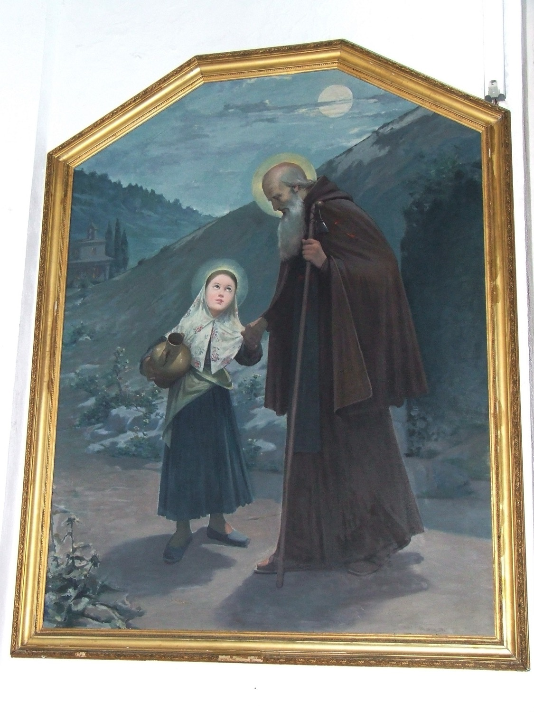

Santa Catalina Tomàs (1531-1574), conocida popularmente en Mallorca como sor Tomasseta o la Beata, es, junto con san Juníper Serra, una de los dos únicos santos canonizados nacidos en Mallorca. Nació en Valldemossa. A los diez años quedó huérfana y se fue a vivir a la posesión de su tío, Son Gallard, donde trabajó como campesina y pastora. Ya desde muy joven destacó por su espiritualidad y sus experiencias místicas, y a los diecinueve años se trasladó a Palma con la intención de ingresar en un convento, pero se encontró con el obstáculo de no disponer de dote. Mientras tanto, gracias a la mediación de su director espiritual, mosén Antoni Castanyeda, entró a servir en casa de la familia Zaforteza, donde aprendió a leer y escribir. Finalmente, el mismo mosén Castanyeda consiguió que fuera aceptada en el convento de Santa Magdalena de Palma.
Fue famosa en vida por su sabiduría y prudencia, que la convirtieron en una reconocida consejera espiritual, por sus dones proféticos, por sus luchas con el demonio y por sus éxtasis místicos, que en ocasiones llegaron a durar un día entero. Su cuerpo incorrupto está expuesto en el convento de Santa Magdalena de Palma.
Esta pintura hace referencia a la tradición según la cual cuando era niña y vivía en Son Gallard, una noche que había ido a buscar agua a la Font d'Avall de Valldemossa se le apareció san Antonio Abad y la acompañó hasta su casa. Santa Catalina aparece vestida de campesina, con un cántaro de agua, y san Antonio con barba larga, vestido de monje y con un cayado de ermitaño con una campanilla. Esta campanilla representa su relación con los monjes antonianos, que identificaban con campanillas los cerdos que criaban para obtener la grasa con la que curaban el “fuego de san Antonio”.